FortiWeb Machine Learning
Anomaly Detection
Introduction
With the release of FortiWeb 6.0 machine-learning was added for Anomaly and Bot detection. This provides Machine Learning based protection against parameter tampering and bot traffic.
This feature can detect and protect web services against unknown/zero-day attacks in addition to the traditional signature based detection methods.
Machine Learning replaced legacy Auto Learn method with NextGen Auto Learn.
Now in addition to learning the web application, it automatically protects it without adminitrative intervention. It even auto adapt to web application's changes.
The anomaly detection model of machine learning feature observes the URLs, parameters of HTTP and HTTPS traffic to the web services. A mathematical models is build to detect abnormal traffic. Whether a request is legitimate or a potential malicious attack, it performs the following tasks:
- Collects web requests details such as URLs and parameters to build a mathematical model
- Matches anomalies against pre-trained threat models
- Detects attacks
FortiWeb employs two layers of machine learning to detect malicious attacks. The first layer uses the HMM (Hidden Markov Model) technique to detect anomalies, the second layer uses the SVM (Support Vector Machine) technique to determin if traffic is malicious.
When the first layer (HMM) triggers a request as an anomaly, then FortiWeb will use the second layer (SVM) to verify whether it's a real attack or just a benign anomaly that should be ignored. To do so, FortiWeb includes pre-built trained threat models from FortiGuard. Each represents a certain attack category, such as SQL Injection, Cross-site Scripting, and so on.
Each threat model is already trained based on analysis of thousands of attack samples from FortiGuard. Threat models are continuously updated using the FortiWeb Security Service. When new attack types are released, the FortiGuard team analyzes the new threats and re-trains the relevant threat model. The new threat model is then pushed to all customer installations in a way similar to how signatures are updated.
Basic Concepts
FortiWeb, Fortinet’s Web Application Firewall, protects your business-critical web applications from attacks that target known and unknown vulnerabilities.
The attack surface of your web applications evolves rapidly, changing every time you deploy new features, update existing ones, or expose new web APIs. You need a solution that can keep up. FortiWeb is that solution.
FortiWeb Machine Learning customizes the protection of each application, providing robust protection without requiring the time-consuming manual tuning required by other solutions. With Machine Learning, FortiWeb identifies anomalous behavior and, more importantly, distinguishes between malicious and benign anomalies. The solution also features robust bot mitigation capabilities, allowing benign bots to connect (e.g. search engines) while blocking malicious bot activity.
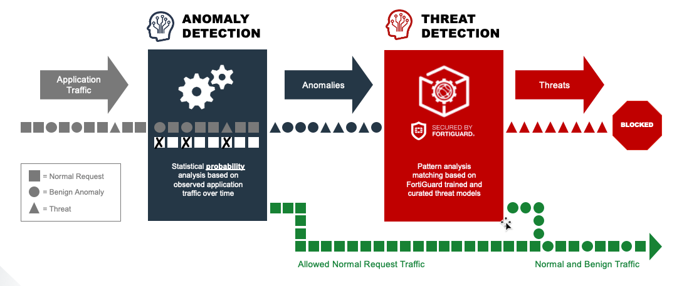
Benefits
In addition to regular signature updates and many other layers of defenses, FortiWeb uses Machine Learning to protect against zero-day attacks and minimize false positives.
Anomaly Detection
The anomaly detection model of machine learning feature observes the URLs, parameters, and HTTP Method of HTTP and/or HTTPS requests passing to your web servers. It builds mathematical models to detect abnormal traffic.
Why ML - Anomaly Detection?
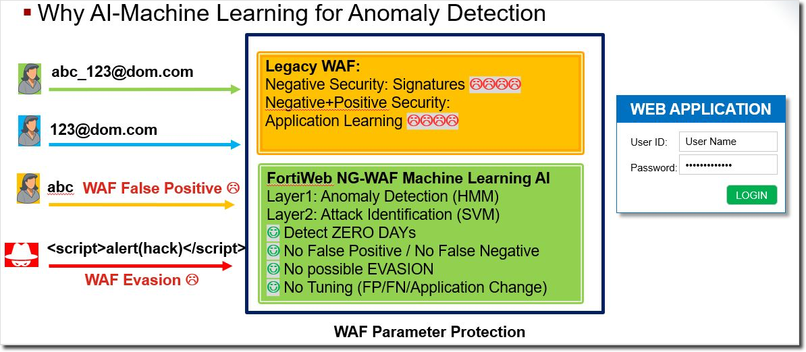
Address Unknown Web Application Attacks.
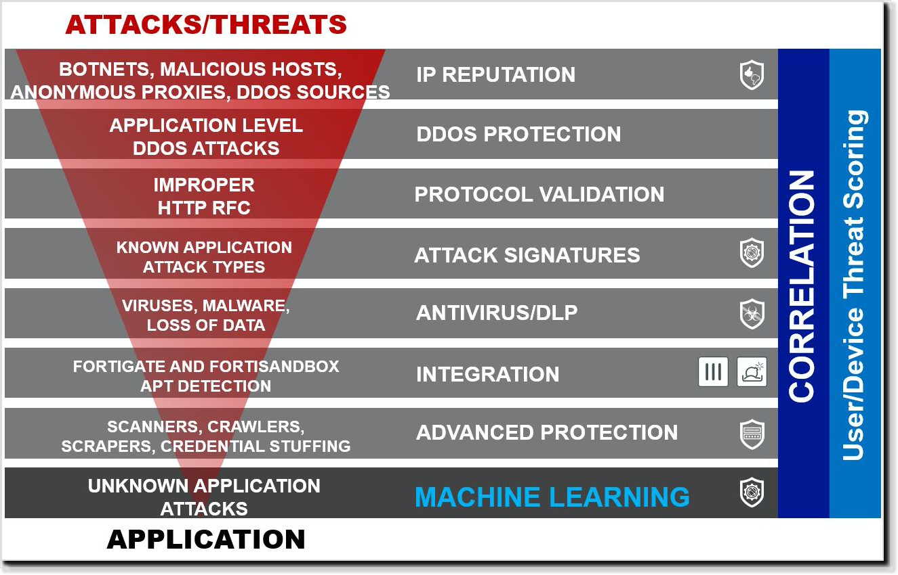
High Level View
To learn about whether a request is legitimate or a potential malicious attack attempt, it performs the following tasks:
- Captures and collects inputs, such as URL parameters, to build a mathematical model of allowed access
- Observes the HTTP method of the traffic
- Matches anomalies against pre-trained threat models
- Detect and prevent attacks
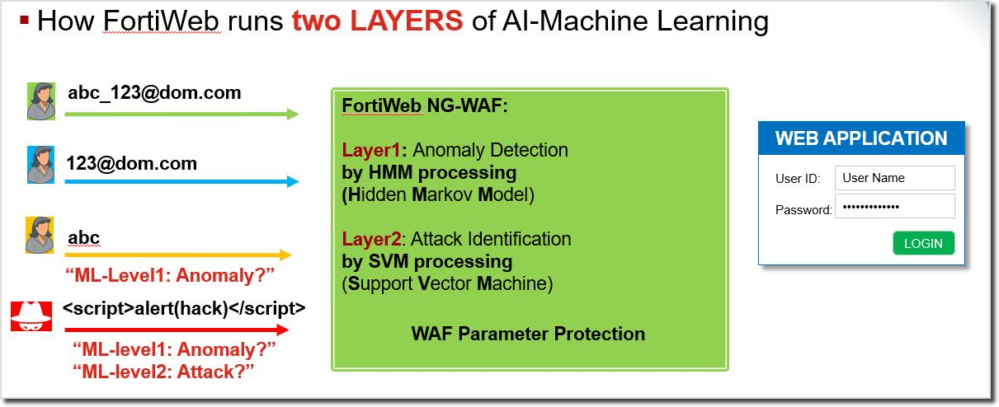
FortiWeb employs two layers of machine learning to detect malicious attacks. The first layer uses the Hidden Markov Model (HMM) and monitors access to the application and collects data to build a mathematical model behind every parameter and HTTP method. Once completed, it will verify every request against the model to determine whether it's an anomaly or not.
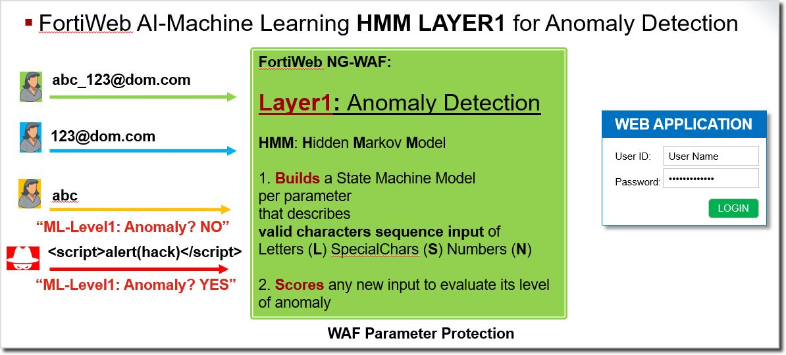
Once the first layer of machine learning triggers a request as an anomaly, FortiWeb will use the second layer of machine learning Support Vector Machine (SVM) to verify whether it's a real attack or just a benign anomaly that should be ignored. To do so, FortiWeb includes pre-built trained threat models. Each represents a certain attack category, such as SQL Injection, Cross-site Scripting, and so on. Each threat model is already trained based on analysis of thousands of attack samples.
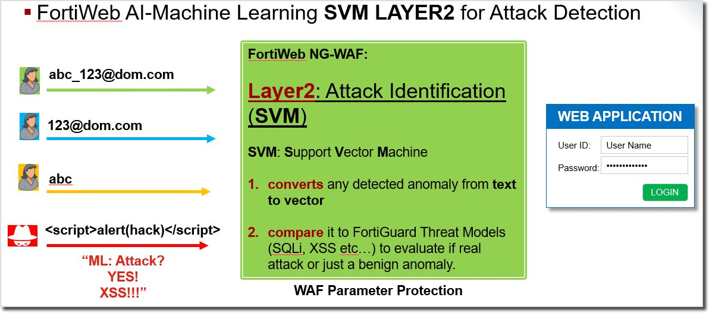
Threat models are continuously updated using the FortiWeb Security Service. When new attack types are released, the FortiGuard team analyzes the new threats and re-trains the relevant threat model. The new threat model is then pushed to all customer installations in a way similar to how signatures are updated.
Build Anomaly Detection Model
Details: How FortiWeb Machine Learning Builds Anomaly Detection Model
Phase 1 Collecting Samples
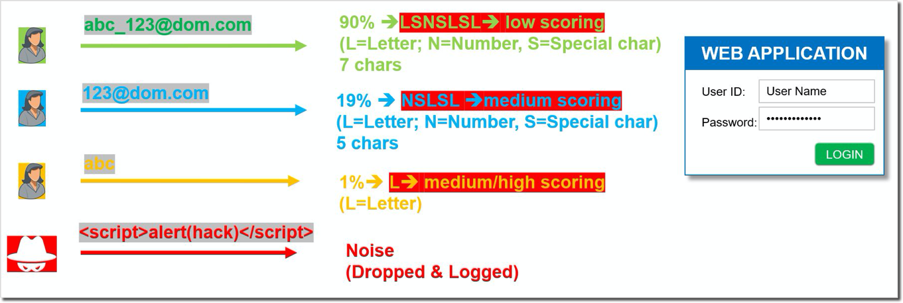
- Machine Learning requires at least 400 unique inputs samples (Fast Mode, learning continues to replace with stronger models)
- Building Anomaly Detection (AD) model + variance
- Switch it in Running mode to enable protection
Phase 2 Scoring Results
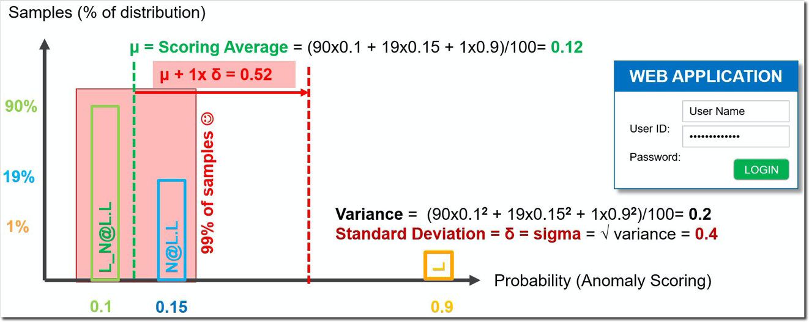
Phase 3 Tuning Deviation
Tuning of the Standard Deviation (sigma) if needed for Anomaly Strictness
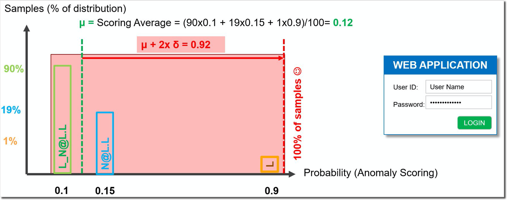
Actual Graph Sample
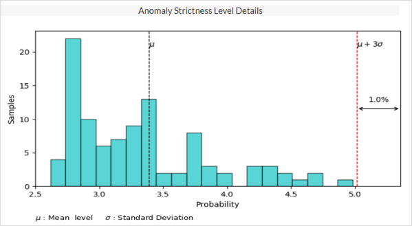
Verify Anomaly Detection Model
Details: Verifying Anomaly with SVM Threat Model
How to read the graph

Once Anomaly been detected, FortiWeb will hand it over to Support Vactor Machine(SVM) layer
- SVM Threat Model
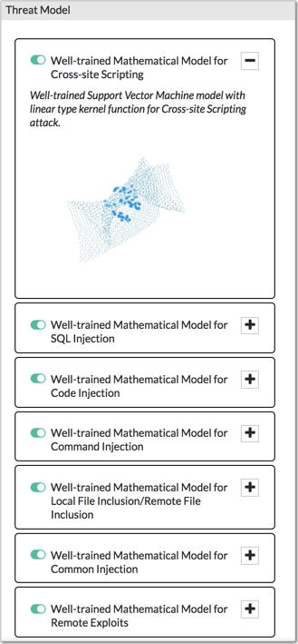
- Pattern Vectorization : converting the pattern into a vector by using a word dictionary
- Pattern example :
<img src = ‘x’ onerror = javascript:alert(1)>- img > HTML Label = index2 + weight2
- < > = ‘ ( ) > special characters = index1 + weight0.5
- src > HTML Attribute = index3 + weight1
- onerror > HTML Event= index4 + weight2
- alert > > HTML Function= index5 + weight1
- Final Vector : 1:0,5 2:2 3:1 4:2 5:1
- Pattern example :
- Pattern Vector Mitigation by SVM Threat Model
- SVM Threat Models are continuously updated and pushed from FortiGuard
- One SVM per family : SQLi, XSS, Command Injection, Code Injection, LFI/ RFI, Common Injection and Remote Exploits
- SVM detects FPs and FNs
- SVM vectors are provided by ForitGuard for on-box detection and as such there is no performance impact on FortiWeb
- SVM can allow the pattern (if no match svm model) or block it (if matches svm model)
- Ex : abc_123 > not detected as anomaly; no need to check it on SVM
- Ex : abc_123 > detected as anomaly but not matching SVM attack
- Ex : or '1'='1' > detected as anomaly and matching SVM SQLi
- SVM Threat Models are continuously updated and pushed from FortiGuard
- Attack Detection model with SVM engines
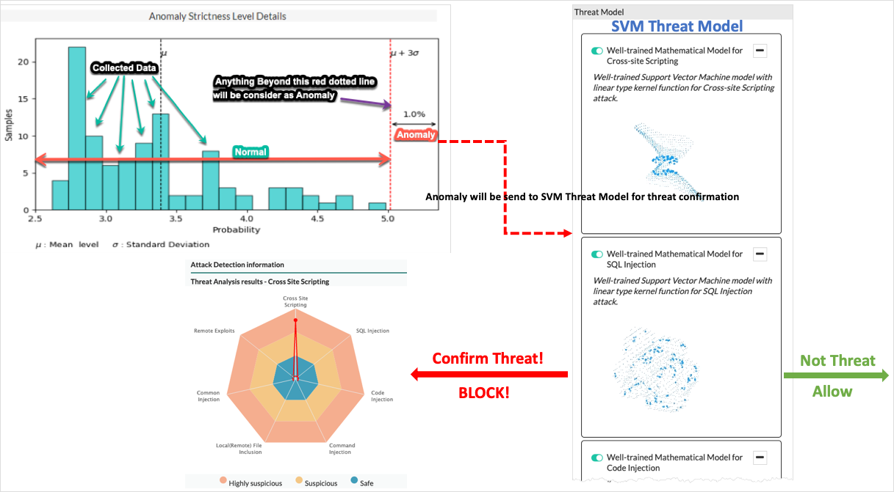
Detect and adapt to changes
Details: Detecting and Adapting to Application changes Automatically
- If a parameter change is detected the status will automatically go into Samples Collection and build an updated model (merge)
NOTE: Maching Learning - Anomaly Detection is per paramater. The process is done for each parameter individually.
Machine Learning Benefits
Summary: FortiWeb Machine Learning for protecting Application Benefits
- Completely automatic
- Near False Positives Free
- Near False Negatives Free
- Follows parameter changes
Knowledge refresh is now complete, you can go back to the Workshop challenge
Online Admin Guide on ML-Anomaly Detection is available here
Bot Detection
Introduction
 FortiWeb applies AI-based bot detection to block malicious bot activity without blocking bots that support legitimate business needs, such as search engines, or health and performance monitoring tools.
FortiWeb applies AI-based bot detection to block malicious bot activity without blocking bots that support legitimate business needs, such as search engines, or health and performance monitoring tools.
FortiWeb offers AI-based Machine Learning - Bot Detection that complements the Bot Mitigation and DoS based protection functions. With this Machine Learning-based capability, you can deploy FortiWeb to detect sophisticated bots that can otherwise go undetected.
FortiWeb Machine Learning for Bot Detection can detect bot-like traffic from the scraper, web vulnerability scanner, crawler, Dos tools, and so on. It observes user behavior from thirteen dimensions to validate if requests are initiated by a human (browsing) or not. Validation is for example done on how many HTTP-requests are initiated by the user, whether the request use illegal HTTP versions, type of browser agent, valid referrers, whether it fetches JSON/XML resources to name a few.
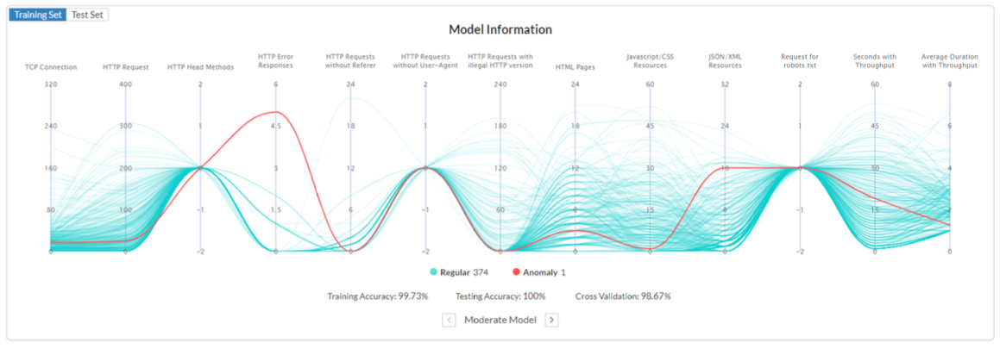
The benefit to the traditional mechanisms to detect bots, the bot detection model saves you the trouble to experiment on an appropriate threshold to detect abnormal user behaviors. For example, how would you estimate how many initiated HTTP-requests should be considered as abnormal? With the traditional mechanism, you may need to experiment on different threshold values and continuously check the attack log until no related attacks (False Positives) are reported for regular traffic.
FortiWeb Machne Learning uses SVM (Support Vector Machine) algorithm to build up the bot detection model which is self-learned from traffic patterns of regular clients. New client HTTP-requests are compared against that of the regular clients based on the mathimatical model created. If requests of a particular client don't match over the configured periode (anomaly), than FortiWeb will classify that client as a bot.
When the traffic patterns of the regular clients vary dramatically (e.g. the functions of your application have changed leading to different behavior), FortiWeb automatically refreshes the bot detection model to adapt to the changes.
Basic Concepts
The bot detection model has three stages: sample collecting, model building, and model running.
Sample Collecting
To build up a bot detection model, the system collects samples (also called vector) of users' behaviors when they are visiting your application. Each sample records a certain user's behaviors in a certain time range.
The samples are split into two parts. Three quarters of the samples are divided into training sample set. One quarter of the samples are divided into testing sample set.
Model Building
During the model building stage, the system observes the training samples to self-learn user behavior profiles and builds up mathematical models using the SVM (Support Vector Machine) algorithm. The SVM parameters are used to eliminate rogue training samples and control individual sample influence on the overall result.
Multiple models are built based on different parameter combinations in the SVM algorithm. According to the training accuracy, cross-validation value, testing accuracy, and the model type you have configured, the system narrows down the selection to one model and uses it as the bot detection model.
Model Running
When the bot detection model is in running state, the system compares users' behaviors against the bot detection model. If the traffic from a certain user doesn't match the model, the system will record the traffic as an anomaly. If a certain times of anomalies are recorded for this user, the system will take actions such as sending alert emails or blocking the traffic from this user.
It's possible that sometimes the traffic is false positively detected as an anomaly. The system uses Bot Confirmation to confirm whether an anomaly is indeed a bot. If the false positive detection occurs so many times that it exceeds a certain threshold, the system considers the current bot detection model invalid, and automatically updates the model.
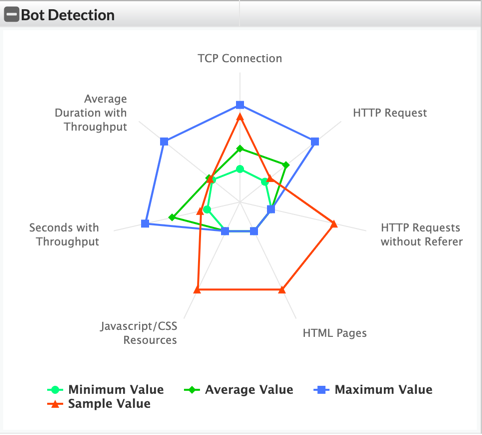
Benefits
- Completely Automatic
- Near False Positives Free
- Near False Negatives Free
Online Admin Guide on ML-Bot Detection is available here